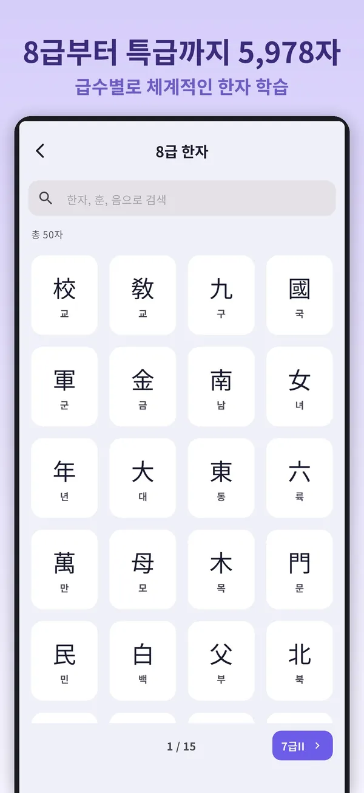
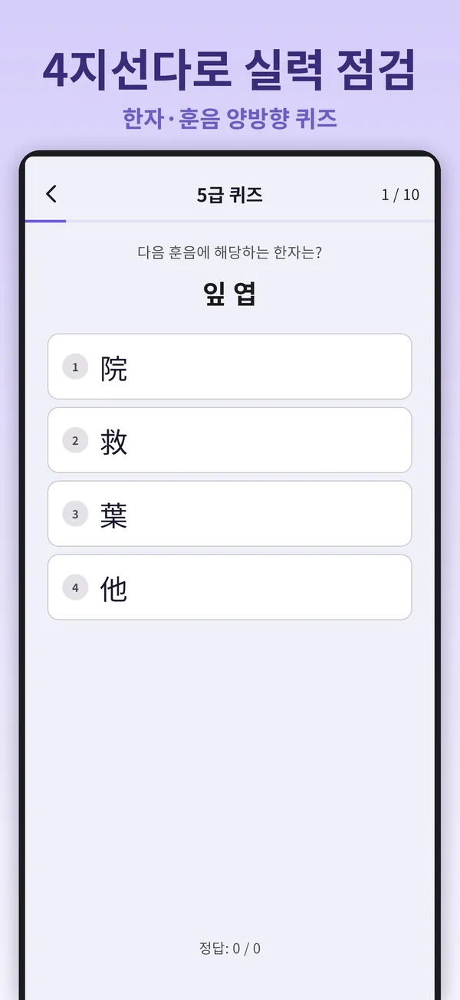
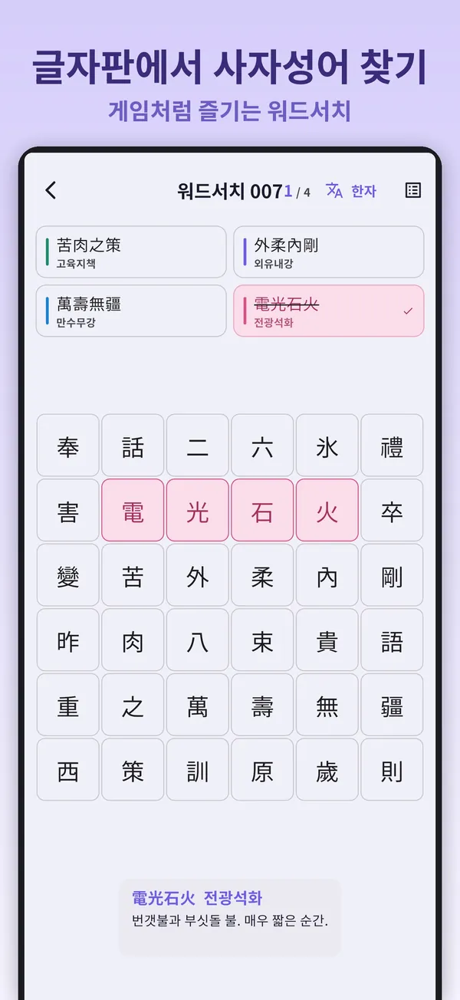
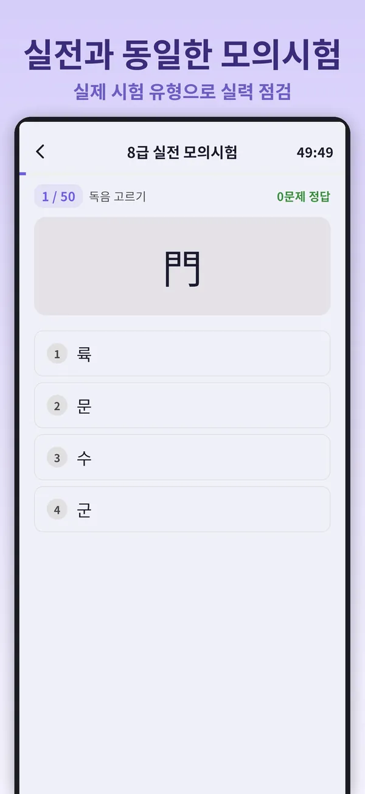
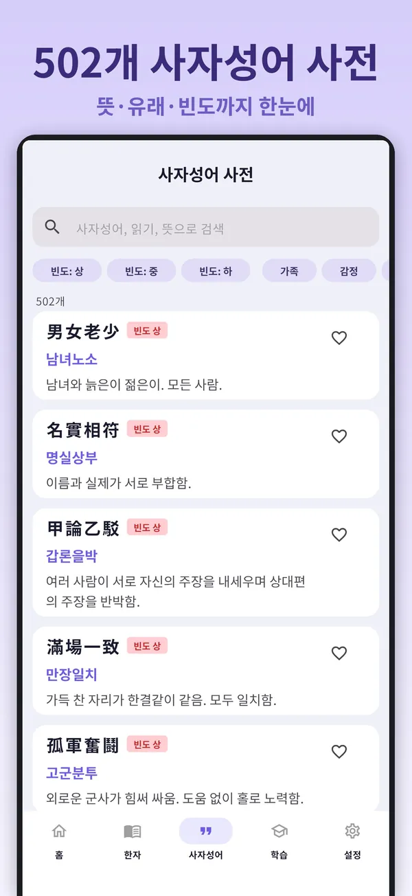
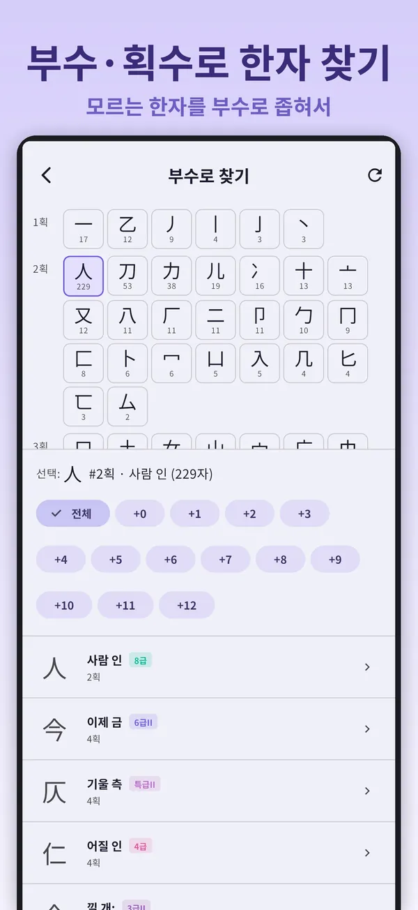
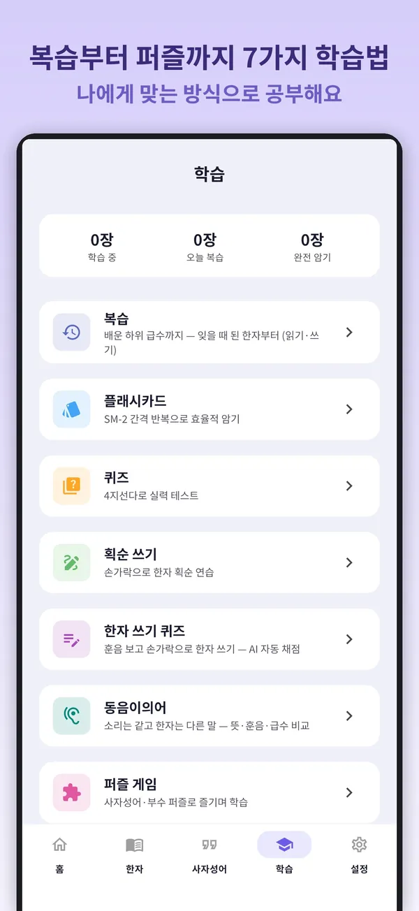

한자능력검정시험,
8급부터 특급까지
The Korean Hanja exam,
level 8 to Special
韓国の漢字検定、
8級から特級まで
한국어문회 배정한자 5,978자를 15개 급수 그대로 담았습니다. 모든 글자를 획순대로 직접 써 보고, 플래시카드·퀴즈·실전 모의시험으로 시험을 준비하세요. 사자성어 502개와 천자문까지 한 앱에 있습니다. All 5,978 characters assigned to Korea's Hanja Proficiency Test (한국어문회), across its 15 levels — with stroke-order writing for every character, flashcards, quizzes, mock exams and 502 four-character idioms. 韓国の漢字能力検定(韓国語文会)の配当漢字5,978字を15の級ごとに収録。すべての字の書き順練習、フラッシュカード、クイズ、模擬試験、四字熟語502個を備えています。


무료 · 광고 포함 · 광고 제거 이용권은 선택 Free · Contains ads · Korean only 無料・広告あり・韓国語のみ
This app is available in Korean only. It is built for the Korean Hanja Proficiency Test, so every menu, reading and meaning is in Korean. For the full feature list, switch to KO at the top.
このアプリは韓国語のみで提供しています。韓国の漢字能力検定向けのため、メニュー・読み・意味はすべて韓国語です。詳しい説明は上の KO に切り替えるとご覧いただけます。
급수 학습부터 모의시험까지Screens (in Korean)アプリ画面(韓国語)
옆으로 넘겨 실제 화면을 보세요.Swipe through the actual screens.横にスクロールして実際の画面をご覧ください。







시험 준비에 필요한 것을 한 앱에
외우고, 써 보고, 풀어 보고, 실전처럼 점검합니다.
급수별 배정한자
8급부터 특급까지 15개 급수, 5,978자. 훈음은 한국어문회 배정 그대로이고, 부수·획수·관련 한자어도 함께 봅니다.
모든 글자 획순 쓰기
5,978자 모두 획순 애니메이션과 따라 쓰기를 지원합니다. 획의 시작점·방향을 판정하고 틀리면 힌트를 보여 줍니다. 글씨는 해서체로도 바꿀 수 있습니다.
플래시카드 복습
SM-2 간격 반복으로 잊어버릴 때쯤 다시 나옵니다. 즐겨찾기한 한자만 모아 볼 수도 있습니다.
퀴즈와 손글씨 퀴즈
한자→훈음, 훈음→한자 4지선다 퀴즈와, 훈음을 보고 손으로 한자를 써서 맞히는 쓰기 퀴즈가 있습니다.
실전 모의시험
급수마다 실제 시험의 문제 유형을 따릅니다. 독음·훈음·필순부터 부수·뜻풀이·동음이의어·사자성어 완성·손글씨 한자 쓰기까지 나오고, 시험 일정과 D-day도 함께 보여 줍니다.
사자성어 사전 502
뜻과 유래, 사용 빈도까지 한눈에 봅니다. 검색과 빈도 필터, 즐겨찾기를 지원합니다.
부수·획수로 찾기
읽는 법을 모르는 한자도 부수와 남은 획수로 좁혀 찾을 수 있습니다.
오늘의 한자 · 동음이의어
매일 한자어가 든 한 문장을 읽고, 소리는 같고 한자가 다른 말 195쌍을 비교하며 익힙니다.
천자문 · 사자소학 · 명심보감
천자문 250구를 구절 카드로 순서대로 외우고, 매일 알림으로 한 구절씩 받아 볼 수 있습니다. 사자소학과 명심보감도 읽을 수 있습니다.
일부만 고르지 않고, 급수 전체를
한국어문회 공식 배정한자 목록을 그대로 따릅니다. 아래는 급수마다 새로 나오는 한자 수이고, 15개 급수 모두 무료로 공부할 수 있습니다.
쉬어 가면서도 한자를 익히는 퍼즐 170단계
모든 퍼즐은 앱에서 공부하는 사자성어·한자로 만들었습니다. 조각을 맞추는 퍼즐은 의도한 정답 말고도 만들 수 있는 모든 조합을 사전과 대조해, 우연히 다른 성어가 되는 경우를 막았습니다. 처음부터 모든 단계가 열려 있습니다.
모든 학습 기능은 무료입니다
유료 상품은 광고 제거 이용권 하나뿐입니다. 자동으로 갱신되는 구독이 아니라 한 번씩 구매하는 방식입니다.
무료
광고 포함
- 15개 급수 5,978자 전부
- 획순 쓰기 · 플래시카드 · 퀴즈 · 모의시험
- 사자성어 502개 · 천자문 · 사자소학 · 명심보감
- 퍼즐 170단계
광고 제거 이용권
1개월 · 1년 · 평생
- 배너·전면 광고 없이 학습
- 기능은 무료와 똑같습니다
- 자동 갱신 없음 — 1개월·1년권은 기간이 끝나면 광고만 다시 나옵니다
자주 묻는 질문
어떤 시험을 다루나요?
한국어문회가 주관하는 한자능력검정시험입니다. 배정한자, 급수 체계, 훈음 모두 공식 목록을 따릅니다.
계정이 필요한가요?
아니요. 계정 없이 모든 기능을 바로 쓸 수 있습니다. 여러 기기에서 이어서 공부하고 싶을 때만 구글·애플 계정으로 로그인하면 되고, 로그인은 학습 기록 동기화에만 쓰입니다.
아이폰에서도 쓸 수 있나요?
네. 구글플레이와 앱스토어 모두에서 받을 수 있습니다.
데이터 오류를 발견했어요.
해당 한자나 사자성어와 문제점을 teamstar13000@gmail.com으로 보내 주세요. 모두 읽고, 확인되면 다음 업데이트에 반영합니다. 고객 지원 페이지에서 자주 묻는 질문도 볼 수 있습니다.
8급부터 차근차근, 특급에 바로 도전해도 좋습니다Start at level 8, or go straight for Special8級からでも、特級からでも
무료로 설치하고 오늘의 한자부터 시작해 보세요.Free to install · Korean only無料・韓国語のみ